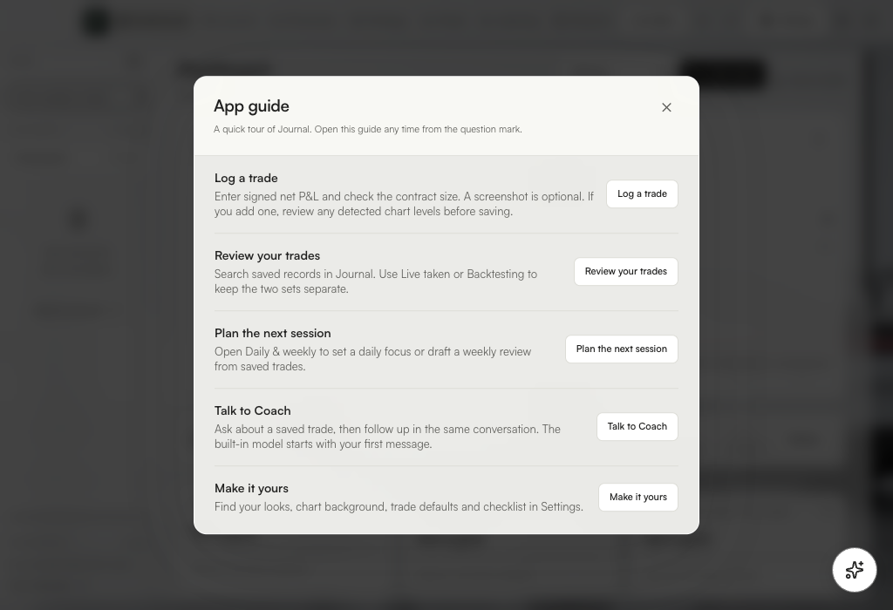

Apple Silicon · Arm64
Install on Mac
One disk image includes Journal, ChartVeil, and the offline model. In Apple menu → About This Mac, look for an Apple chip.
Download the Mac installerInstall in three steps
- Open the downloaded .dmg from Downloads.
- Drag the PROFFITABILITY JOURNAL folder onto Applications.
- Open that folder in Applications and launch Journal or ChartVeil.
This beta uses an ad hoc signature. If macOS blocks the first launch, check that you downloaded this exact release, then follow Apple’s first-launch instructions.

First launch
In Journal, open Coach and send a message to load the model. In ChartVeil, open Settings → Automatic backgrounds and follow the TradingView Desktop connection prompt. ChartVeil setup and controls.